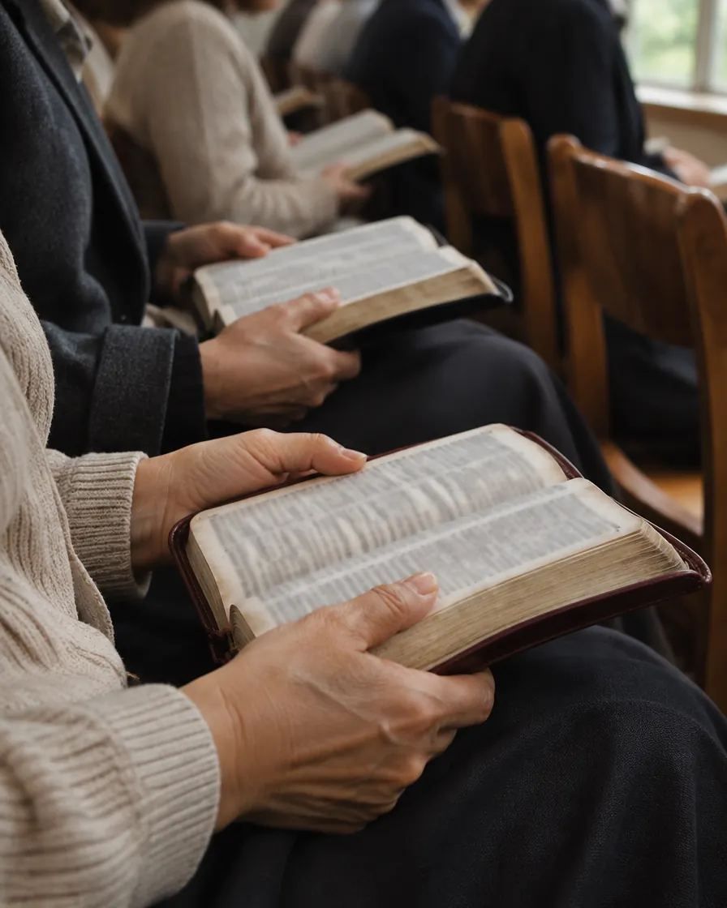
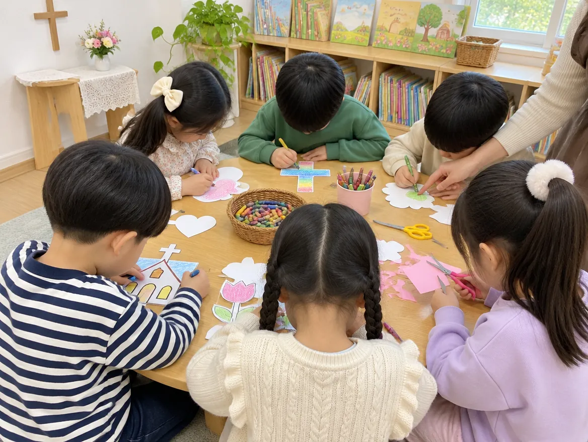
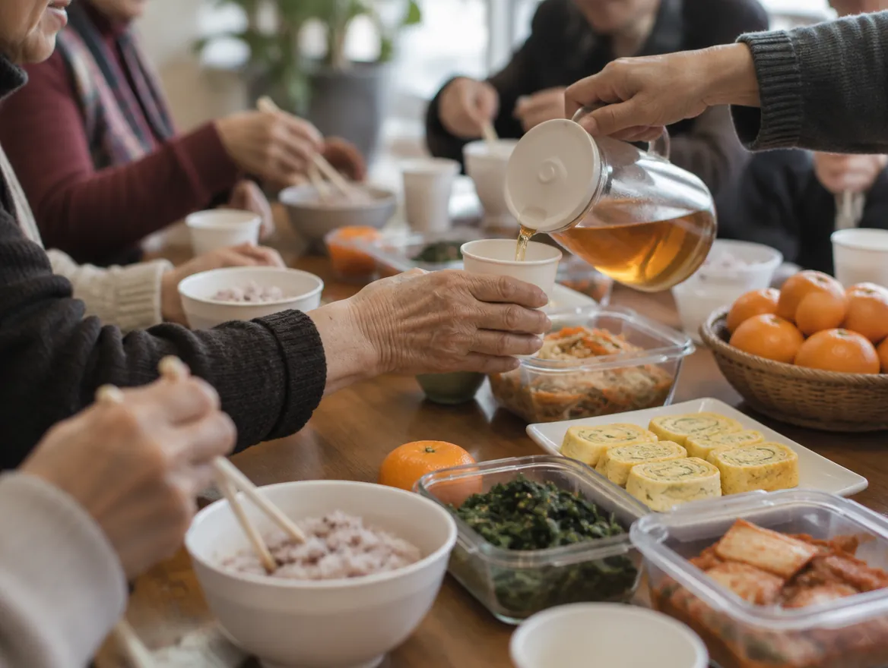

설교말씀
전체 보기- 곧 첫 설교 말씀을 올리겠습니다.
온길교회는 하나님의 말씀을 중심으로 예배하며, 서로의 삶을 나누고 지역사회를 사랑으로 섬기는 믿음의 공동체입니다.





화려한 프로그램보다 진실한 예배를, 많은 사람보다 한 사람의 영혼을 소중히 여깁니다.
성경을 바르게 배우고 삶으로 실천하는 교회
하나님을 진실하게 예배하는 공동체
한 사람을 존중하고 다음세대를 세우는 교회
이웃의 필요를 살피며 사랑을 실천하는 교회
호떡 한 장, 어묵 한 꼬치, 잘 갈린 칼 한 자루로 인사를 건넵니다.
따뜻한 호떡 한 장에 이웃을 향한 사랑을 담습니다. 지역 주민들에게 간식을 무료로 나누며 자연스럽게 인사하고 소통하는 사역입니다.
가정에서 사용하는 무뎌진 칼을 무료로 갈아드리며 생활 속 작은 불편을 덜어드립니다. 주민들의 필요를 살피고 실질적인 도움을 전하는 사역입니다.
추운 날씨에 따뜻한 어묵과 국물을 나누며 이웃과 마음을 나눕니다. 부담 없는 만남을 통해 지역사회와 소통합니다.
교회를 처음 찾거나 신앙의 기초를 배우기 원하는 분들과 성경을 함께 공부합니다. 기독교 신앙의 핵심을 쉽고 친절하게 나눕니다.
어린이와 청소년이 하나님의 사랑 안에서 성장하도록 말씀교육과 기도, 다양한 교제 활동을 진행합니다.